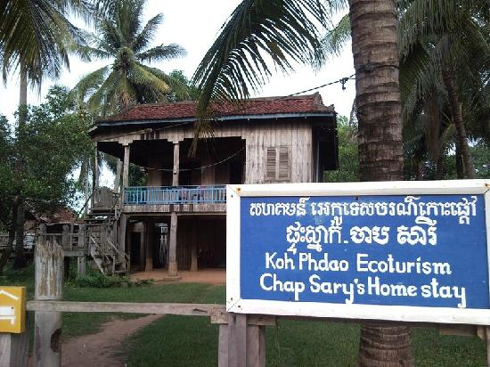

សូមស្វាគមន៍មកកាន់តំបន់ទេសចរណ៍កម្ពុជា
កោះផ្តៅ ជាកោះមួយស្ថិតនៅខេត្តក្រចេះនៅភាគឦសាននៃប្រទេសកម្ពុជា។ កោះផ្តៅមានឈ្មោះល្បីសម្រាប់ត្រីផ្សោតទឹកដែលកំពុងមាននៅទន្លេមេគង្គ។ អ្នកទេសចរអាចរីករាយទេសភាពទេសភាពដ៏ស្រស់ស្អាតនៃទេសភាពទន្លេមេគង្គខណៈពេលដែលមើលត្រីផ្សោតអ៊ីរ៉ាវ៉ាឌីហែលទឹកក្បែរទូករបស់ពួកគេ។ នៅពេលល្ងាចថ្ងៃលិចដ៏ស្រស់ស្អាតនឹងប្រែទៅជាទន្លេបដា។ នៅលើកំពូលនៃភ្ញៀវទេសចរដែលអាចជួយសហគមន៍តាមរយៈការចូលរួមក្នុងសកម្មភាពសហគមន៍ដូចជាការ ជីកស្រះចញ្ចឹមត្រីនិងកង្កែប, ចញ្ចឹមមាន់និងទា, ការធ្វើកសិកម្មជាដើម។

អ្នកអាចទៅដល់ក្រុងក្រចេះដោយឡានក្រុងឡានក្រុងឬតាក់ស៊ីពីរាជធានី ភ្នំពេញតាមបណ្តោយផ្លូវជាតិលេខ 6 និង 7. កោះពៅមានចម្ងាយប្រមាណ 40 គម។ពីក្រុងក្រចេះ។ វាមានចម្ងាយ 45 នាទីពីក្រុងក្រចេះដោយឡានតាក់ស៊ីឬតាក់ស៊ីនិង 20 ទៅ 30 នាទីទៀតដោយទូកយឺត ៗ ចុះទៅទន្លេមេគង្គ។
ជាកោះមួយស្ថិតនៅខេត្តក្រចេះនៅភាគឦសាននៃប្រទេសកម្ពុជា។ កោះផ្តៅមានឈ្មោះល្បីសម្រាប់ត្រីផ្សោតទឹកដែលកំពុងមាននៅទន្លេមេគង្គ។ អ្នកទេសចរអាចរីករាយទេសភាពទេសភាពដ៏ស្រស់ស្អាតនៃទេសភាពទន្លេមេគង្គខណៈពេលដែលមើលត្រីផ្សោតអ៊ីរ៉ាវ៉ាឌីហែលទឹកក្បែរទូករបស់ពួកគេ។ នៅពេលល្ងាចថ្ងៃលិចដ៏ស្រស់ស្អាតនឹងប្រែទៅជាទន្លេបដា។ នៅលើកំពូលនៃភ្ញៀវទេសចរដែលអាចជួយសហគមន៍តាមរយៈការចូលរួមក្នុងសកម្មភាពសហគមន៍ដូចជាការ ជីកស្រះចញ្ចឹមត្រីនិងកង្កែប, ចញ្ចឹមមាន់និងទា, ការធ្វើកសិកម្មជាដើម។

© រក្សាសិទ្ធិគ្រប់យ៉ាងដោយ Visit Cambodia tours ឆ្នាំ២០១៨
អាសយដ្ឋាន
អគារលេខ ៣០៨ មហាវិថីព្រះមុន្នីវង្ស
សង្កាត់បឹងរាំង ខណ្ឌដូនពេញ
Visit Cambodia tours ជាគេហទំព័រ សម្រាប់ធ្វើការស្វែងរកកន្លែងកម្សាន្ត និង បញ្ជាក់បន្ថែមនៅពត័មានរបស់ខេត្ត។